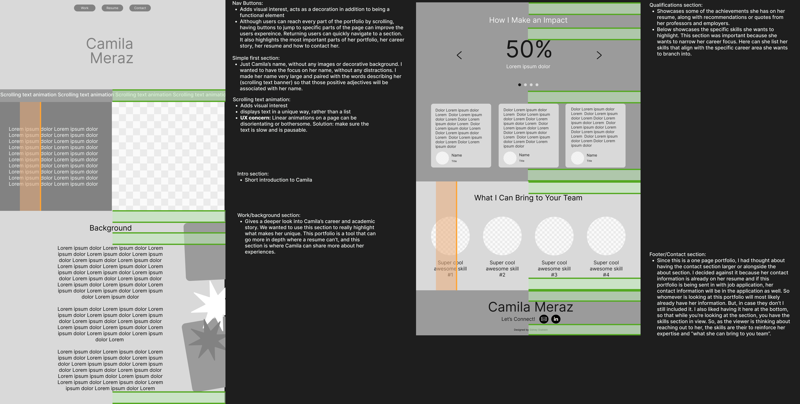
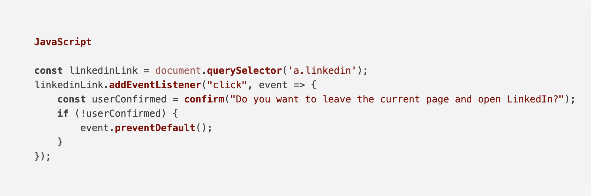
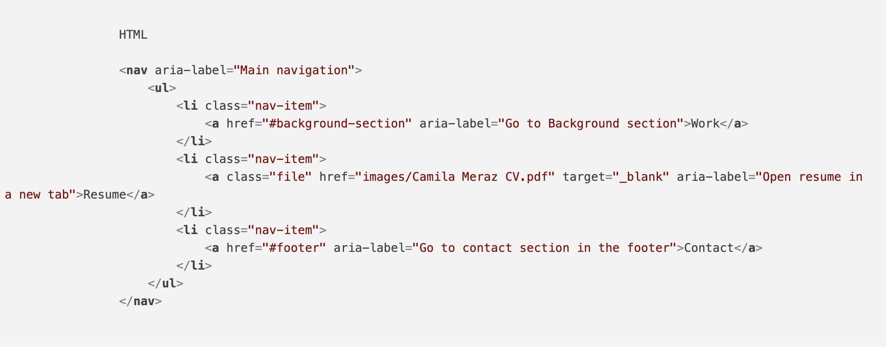
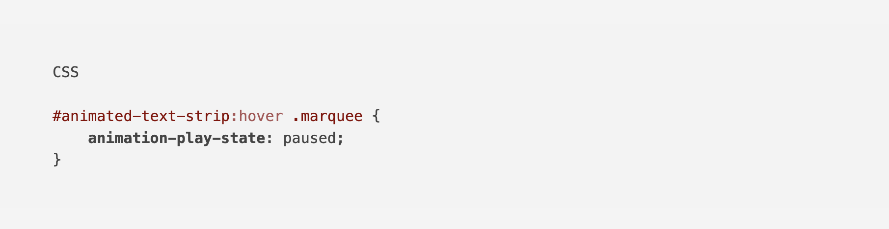

Design Tools
- Figma
- Canva

After graduating with a master's degree, Camila realized that while her resume was impressive, potential employers were often asking for a portfolio to better showcase her accomplishments and professional journey. As a communications and marketing strategist, she didn’t have visual assets to display, like a designer would, but she did have an extensive list of achievements, statistics, and performance metrics that she wanted to highlight. The goal of this project was to create an online portfolio that would emphasize her accomplishments while also showcasing her personality, aligning with her desire to work at a more creative company in industries like fashion or product marketing.
Since this portfolio is displaying text instead of visual work the main challenge was creating a portfolio that would appeal to a creative audience while still showcasing her communication and strategy expertise. To achieve this, I focused on the following design principles:

.png)
Responsive Design: I used media query's to adjust the layout to different screen sizes, providing a seamless user experience across devices. Semantic Code & Maintainability: I wrote clean, organized code to ensure that the website is easily editable and maintainable in the future. Using HTML5 semantic elements helped the code to be more straightforward if Camila ever needs to edit it herself. User Experience (UX): The design is intuitive, with a logical flow that guides visitors through her story, skills, and accomplishments. I ensured that the site was accessible by using aria-labels, ability to pause animated text and user confirmation messages when leaving her website.

Semantic Code & Maintainability: I wrote clean, organized code to ensure that the website is easily editable and maintainable in the future. Using HTML5 semantic elements helped the code to be more straightforward if Camila ever needs to edit it herself.

User Experience (UX): The design is intuitive, with a logical flow that guides visitors through her story, skills, and accomplishments. I ensured that the site was accessible by using aria-labels, ability to pause animated text and user confirmation messages when leaving her website.
